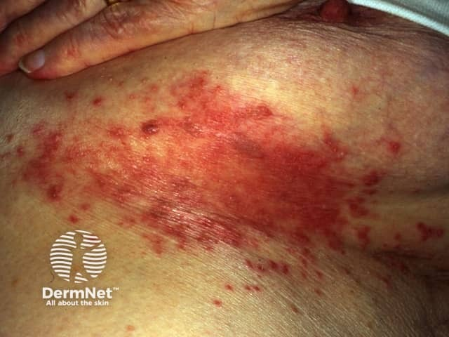
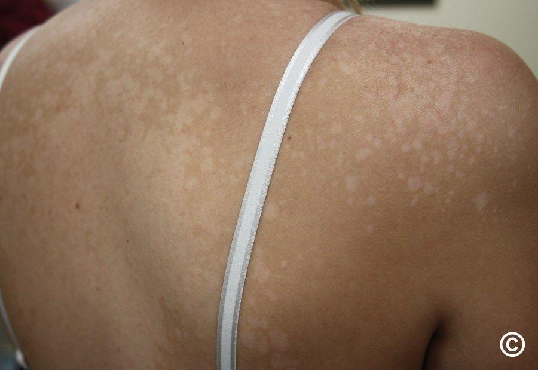
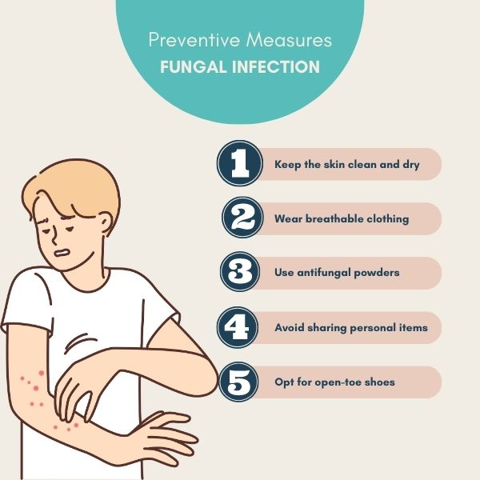

Fungal Skin Infections: Types, Diagnosis and Treatment
डा. विकास पौडेल | जुन १५, २०२५ | डर्माटोलोजी
Dr. Vikash Paudel | June 15, 2025 | Dermatology
फंगल छाला रोगहरू: प्रमुख प्रकार र उपचार
Fungal Skin Infections: Major Types and Treatment
फंगल छाला रोग विश्वभरि सामान्य रूपमा देखिने समस्या हो। नेपाल जस्तो उष्ण र नमीयुक्त मौसम भएको देशमा यो समस्या अत्यधिक प्रचलित छ।
यस लेखमा, हामी फंगल छाला रोगहरूका प्रमुख प्रकारहरू (टिनिया, क्यान्डिडियासिस, पिटिरियासिस भर्सिकलर), तिनको निदानका तरिकाहरू, र उपचारका विकल्पहरूको बारेमा विस्तृत जानकारी प्रस्तुत गर्नेछौं।
Fungal skin infections are common problems worldwide. In countries like Nepal with hot and humid climates, this problem is highly prevalent.
In this article, we will provide detailed information about the main types of fungal skin infections (Tinea, Candidiasis, Pityriasis versicolor), their diagnostic methods, and treatment options.
फंगल छाला रोगका प्रमुख प्रकारहरू
Major Types of Fungal Skin Infections
टिनिया (दाद) संक्रमण
Tinea (Ringworm) Infections

क्यान्डिडियासिस (खमिर संक्रमण)
Candidiasis (Yeast Infection)

पिटिरियासिस भर्सिकलर (तवक सेतो)
Pityriasis Versicolor (Tinea Versicolor)

फंगल रोगबाट बच्ने उपाय
Prevention of Fungal Infections
१. टिनिया (दाद) संक्रमण
1. Tinea (Ringworm) Infections
टिनिया एक प्रकारको फंगल संक्रमण हो जसलाई सामान्य भाषामा "दाद" भनिन्छ। यो डर्मेटोफाइट नामक फंगसबाट हुन्छ। यसका विभिन्न प्रकारहरू छन्:
Tinea is a type of fungal infection commonly known as "ringworm". It is caused by a fungus called dermatophyte. It has various types:
टिनिया कर्पोरिस: शरीरको विभिन्न भागमा हुने दाद
टिनिया क्रुरिस: जाँघको भित्री भागमा हुने दाद (जॉक इच)
टिनिया पेडिस: खुट्टामा हुने दाद (एथलीट फुट)
टिनिया उन्गुइअम: नङमा हुने फंगल संक्रमण
टिनिया क्यापाइटिस: टाउकोमा हुने दाद
Tinea corporis: Ringworm on various parts of the body
Tinea cruris: Ringworm in the inner thigh (Jock itch)
Tinea pedis: Ringworm on feet (Athlete's foot)
Tinea unguium: Fungal infection in nails
Tinea capitis: Ringworm on the scalp
२. क्यान्डिडियासिस (खमिर संक्रमण)
2. Candidiasis (Yeast Infection)
क्यान्डिडा एल्बिकान्स नामक खमिरबाट हुने संक्रमण हो। यो नमीयुक्त ठाउँहरू जस्तै बगल, कमर, ओठ, मुख, र जननाङ्ग क्षेत्रमा हुन सक्छ। क्यान्डिडियासिसका प्रमुख प्रकारहरू:
Candidiasis is an infection caused by the yeast Candida albicans. It can occur in moist areas such as armpits, waist, lips, mouth, and genital areas. Major types of candidiasis:
मुख क्यान्डिडियासिस (थ्रस): मुख र घाँटीमा हुने सेतो धब्बा
जननाङ्ग क्यान्डिडियासिस: महिला र पुरुष दुवैमा हुने योनि वा लिङ्ग संक्रमण
इन्टरट्रिगो: छालाको भागहरू आपसमा घसेको ठाउँमा हुने संक्रमण
क्यान्डिडल पेरोनिशिया: नङको आसपास हुने संक्रमण
Oral candidiasis (Thrush): White spots in mouth and throat
Genital candidiasis: Vaginal or penile infection in both women and men
Intertrigo: Infection in skin folds where skin rubs against skin
Candidal paronychia: Infection around nails
३. पिटिरियासिस भर्सिकलर (तवक सेतो)
3. Pityriasis Versicolor (Tinea Versicolor)
यो मलासेजिया फफूंदबाट हुने संक्रमण हो जसले छालाको रङ्ग परिवर्तन गर्दछ। यो गर्मी र नमीयुक्त मौसममा बढी हुन्छ। यसमा छालामा सेतो, गुलाबी वा खैरो रङ्गका धब्बाहरू देखिन्छन् जुन धूप लाग्दा स्पष्ट देखिन्छन्।
This is an infection caused by Malassezia fungus that changes skin color. It is more common in hot and humid weather. It causes white, pink or brown spots on the skin that become more visible when exposed to sunlight.
फंगल संक्रमणबाट बच्ने उपायहरू
Preventive Measures for Fungal Infections
प्रतिदिन सफा र सुख्खा लुगा लगाउनुहोस्
नमीयुक्त ठाउँहरू (बगल, कमर) सुख्खा राख्नुहोस्
सार्वजनिक स्थानहरूमा नङ्गो खुट्टा हिंड्नुहुन्न
अरूको तौलिया, कंघी, र लुगा प्रयोग नगर्नुहोस्
छाला सुख्खा राख्न एन्टिफंगल पाउडर प्रयोग गर्नुहोस्
Wear clean and dry clothes daily
Keep moist areas (armpits, waist) dry
Do not walk barefoot in public places
Do not use others' towels, combs, and clothes
Use antifungal powder to keep skin dry
फंगल छाला रोग बारे शैक्षिक भिडियो
Educational Video on Fungal Skin Infections
यो भिडियोमा फंगल छाला रोगहरूका कारणहरू, लक्षणहरू र उपचारका विकल्पहरूको बारेमा विस्तृत जानकारी समावेश छ।
This video contains detailed information about causes, symptoms, and treatment options for fungal skin infections.
फंगल छाला रोगको निदानका तरिकाहरू (Investigations)
Diagnostic Methods for Fungal Skin Infections (Investigations)
KOH परीक्षण (पोटासियम हाइड्रोक्साइड)
KOH Test (Potassium Hydroxide)
यो सबैभन्दा सरल र तत्काल निदानको तरिका हो। संक्रमित छालाको नमुनालाई KOH घोलमा राखेर माइक्रोस्कोपबाट हेर्ने गरिन्छ। फंगसको संरचना स्पष्ट देखिन्छ।
This is the simplest and immediate diagnostic method. A sample from infected skin is placed in KOH solution and examined under a microscope. Fungal structures become clearly visible.
फंगल कल्चर
Fungal Culture
संक्रमित भागबाट लिइएको नमुनालाई विशेष माध्यममा राखेर २-४ हप्ता सम्म पालन गरिन्छ। यसबाट फंगसको प्रकार र यसले कुन एन्टिफंगल औषधिबाट नष्ट हुन्छ भन्ने कुरा थाहा पाउन सकिन्छ।
A sample from the infected area is placed in a special medium and observed for 2-4 weeks. This helps identify the type of fungus and which antifungal medications it is sensitive to.
वुड्स लाइट परीक्षण
Wood's Lamp Examination
विशेष प्रकारको अल्ट्रावाइयोलेट लाइट (वुड्स लाइट) प्रयोग गरी संक्रमित छाला हेर्ने गरिन्छ। केही फंगल संक्रमणहरू यस लाइटमा विशेष रङ्गमा चम्कने गर्दछन्।
A special type of ultraviolet light (Wood's lamp) is used to examine infected skin. Some fungal infections fluoresce in specific colors under this light.
छाला बायोप्सी
Skin Biopsy
गम्भीर वा जटिल संक्रमणको अवस्थामा, संक्रमित छालाको सानो टुक्रा लिई प्रयोगशालामा परीक्षण गरिन्छ। यसबाट फंगसको संरचनालाई हिस्टोप्याथोलोजीबाट पनि हेर्न सकिन्छ।
In severe or complicated infections, a small piece of infected skin is taken and tested in the laboratory. This allows examination of fungal structures through histopathology as well.
हालै प्रकाशित अनुसन्धान लेखहरू
Recently Published Research Articles
नेपालमा फंगल छाला रोगहरूको महामारी विज्ञान
Epidemiology of Fungal Skin Infections in Nepal
जर्नल अफ नेपाली मेडिकल एसोसिएशन, २०२४ | मूल अनुसन्धान
Journal of Nepalese Medical Association, 2024 | Original Research
यस अध्ययनले नेपालमा फंगल छाला रोगहरूको प्रचलन २३.५% रहेको देखाएको छ, जसमा टिनिया कर्पोरिस सबैभन्दा बढी (४२.३%) देखिएको छ।
This study showed that the prevalence of fungal skin infections in Nepal is 23.5%, with Tinea corporis being the most common (42.3%).
एन्टिफंगल प्रतिरोधकता: एक उभरिदो चुनौती
Antifungal Resistance: An Emerging Challenge
जर्नल अफ द अमेरिकन एकेडेमी अफ डर्माटोलोजी (JAAD), २०२४ | समीक्षा लेख
Journal of the American Academy of Dermatology (JAAD), 2024 | Review Article
यस लेखमा फंगल रोगहरूमा एन्टिफंगल औषधिको प्रतिरोधकताको बढ्दो समस्या र यसको समाधानका उपायहरू छलफल गरिएको छ।
This article discusses the growing problem of antifungal drug resistance in fungal diseases and possible solutions.
पिटिरियासिस भर्सिकलरको लागि नयाँ उपचार विकल्पहरू
New Treatment Options for Pityriasis Versicolor
ब्रिटिश जर्नल अफ डर्माटोलोजी (BJD), २०२३ | नैदानिक परीक्षण
British Journal of Dermatology (BJD), 2023 | Clinical Trial
यस अध्ययनले पिटिरियासिस भर्सिकलरको उपचारमा नयाँ टपिकल एजेन्टहरूको प्रभावकारिता र सुरक्षाको मूल्याङ्कन गरेको छ।
This study evaluated the efficacy and safety of new topical agents in the treatment of pityriasis versicolor.
बारम्बार सोधिने प्रश्नहरू (FAQs)
Frequently Asked Questions (FAQs)
फंगल छाला रोग संक्रामक हुन्छ?Are fungal skin infections contagious?+
हो, धेरैजसो फंगल छाला रोगहरू संक्रामक हुन्छन्। तिनीहरू प्रत्यक्ष सम्पर्क (छालासँग छाला), अप्रत्यक्ष सम्पर्क (संक्रमित व्यक्तिको लुगा, तौलिया, कंघी प्रयोग गर्दा), वा दूषित सतहबाट सर्न सक्छन्।
Yes, most fungal skin infections are contagious. They can spread through direct contact (skin-to-skin), indirect contact (using infected person's clothes, towels, combs), or contaminated surfaces.
फंगल संक्रमण पूर्ण रूपमा ठीक हुन्छ?Can fungal infections be completely cured?+
हो, धेरैजसो फंगल संक्रमणहरू उचित उपचारबाट पूर्ण रूपमा ठीक हुन्छन्। तर पुनः संक्रमण हुन सक्छ यदि रोकथामका उपायहरू अपनाइएन भने। केही अवस्थामा (जस्तै नङको फंगस) उपचारमा लामो समय लाग्न सक्छ।
Yes, most fungal infections can be completely cured with proper treatment. However, reinfection can occur if preventive measures are not taken. In some cases (such as nail fungus), treatment may take a long time.
घरेलु उपचारबाट फंगल संक्रमण ठीक हुन्छ?Can fungal infections be treated with home remedies?+
हल्का संक्रमणहरूको लागि निम, हल्दी, लसुन, टी ट्री ओइल जस्ता घरेलु उपचारहरूले राहत दिन सक्छन्। तर गम्भीर संक्रमणहरूको लागि डाक्टरले सुझाव गरेको एन्टिफंगल औषधि नै प्रभावकारी हुन्छ। घरेलु उपचार मात्र भर पर्नु हुँदैन।
For mild infections, home remedies like neem, turmeric, garlic, tea tree oil can provide relief. But for severe infections, antifungal medications prescribed by a doctor are more effective. Do not rely solely on home remedies.
फंगल संक्रमणको उपचार कति समयसम्म चलाउनु पर्छ?How long should fungal infection treatment be continued?+
यो संक्रमणको प्रकार र गम्भीरतामा निर्भर गर्दछ। साधारण छालाको फंगल संक्रमण २-४ हप्तामा ठीक हुन्छ। नङको फंगस जस्तो गम्भीर संक्रमणको लागि ३-६ महिना वा बढी समय लाग्न सक्छ। लक्षण नहेरेपछि पनि डाक्टरले भनेअनुसार औषधि चलाइरहनु पर्छ।
It depends on the type and severity of the infection. Simple skin fungal infections heal in 2-4 weeks. Severe infections like nail fungus may take 3-6 months or more. Medications should be continued as directed by the doctor even after symptoms disappear.
फंगल संक्रमणको पुनरावृत्ति रोक्न के गर्न सकिन्छ?How can recurrence of fungal infections be prevented?+
पुनरावृत्ति रोक्न यी उपायहरू अपनाउनुहोस्: १) प्रतिदिन सफा लुगा लगाउनुहोस्, २) छाला सुख्खा राख्नुहोस्, ३) सार्वजनिक ठाउँहरूमा नङ्गो खुट्टा नहिंड्नुहोस्, ४) अरूको व्यक्तिगत वस्तुहरू प्रयोग नगर्नुहोस्, ५) नियमित रूपमा एन्टिफंगल साबुन वा पाउडर प्रयोग गर्नुहोस्।
To prevent recurrence, adopt these measures: 1) Wear clean clothes daily, 2) Keep skin dry, 3) Do not walk barefoot in public places, 4) Do not use others' personal items, 5) Regularly use antifungal soap or powder.
फोनबाट अबैठक बुक गर्नुहोस्
Book Appointment by Phone
फंगल छाला रोगको उपचारको लागि हामीलाई फोन गर्नुहोस्। हामी २४/७ फोन सेवा उपलब्ध गराउँदछौं।
Call us for treatment of fungal skin infections. We provide 24/7 phone service.
डा. विकास पौडेल काठमाडौं, नेपालमा अभ्यास गर्ने एक प्रमुख डर्माटोलोजिस्ट हुन्। उनले फंगल छाला रोगहरूको निदान र उपचारमा विशेषज्ञता हासिल गरेका छन् र नेपाली रोगीहरूलाई गुणस्तरीय डर्माटोलोजी सेवा प्रदान गर्दछन्।
Dr. Vikash Paudel is a leading dermatologist practicing in Kathmandu, Nepal. He has specialized in the diagnosis and treatment of fungal skin infections and provides quality dermatology services to Nepali patients.